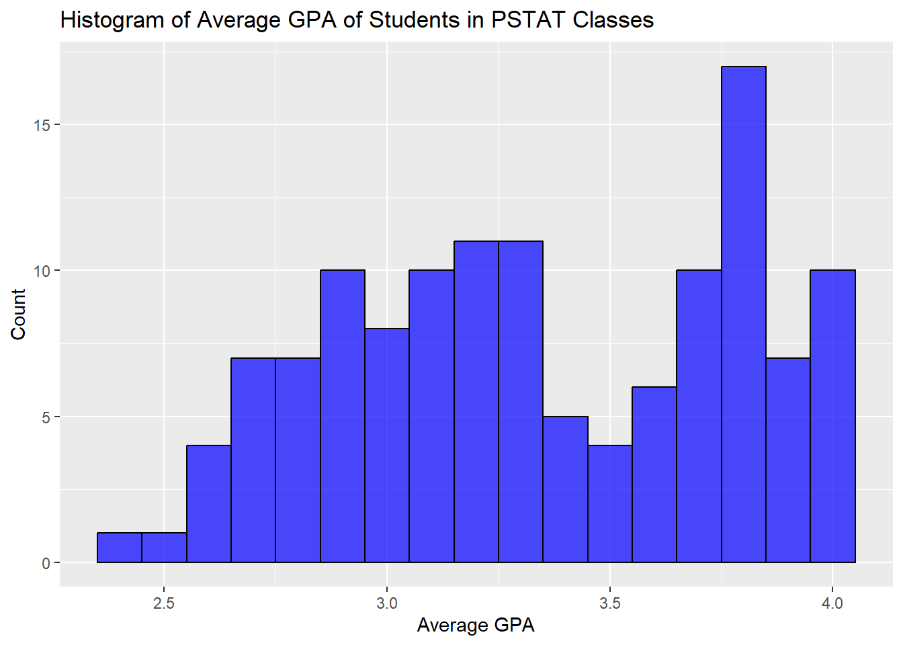
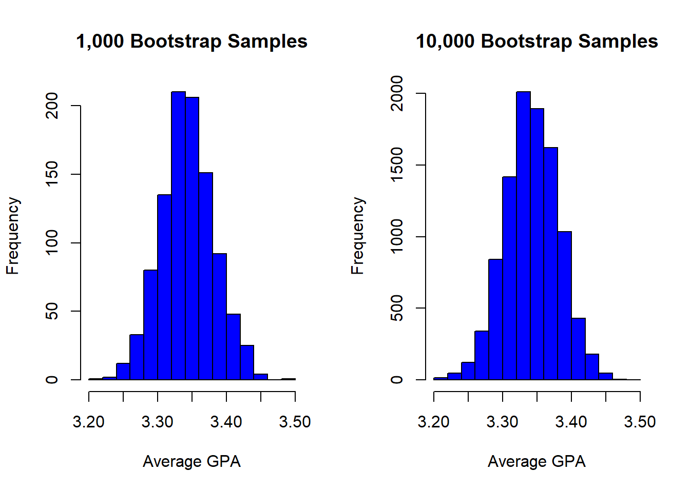
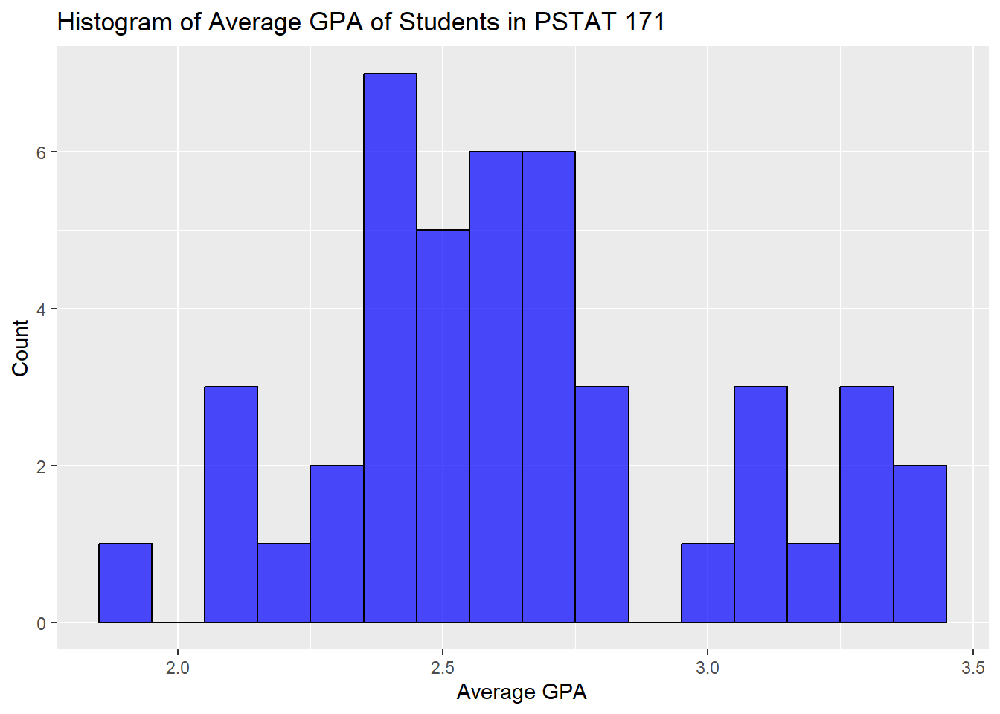
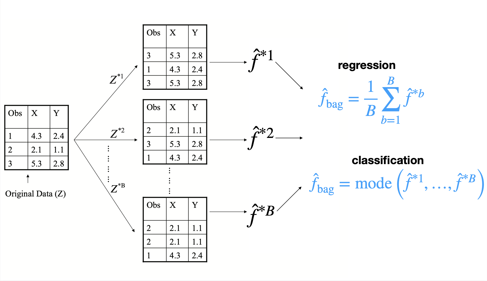
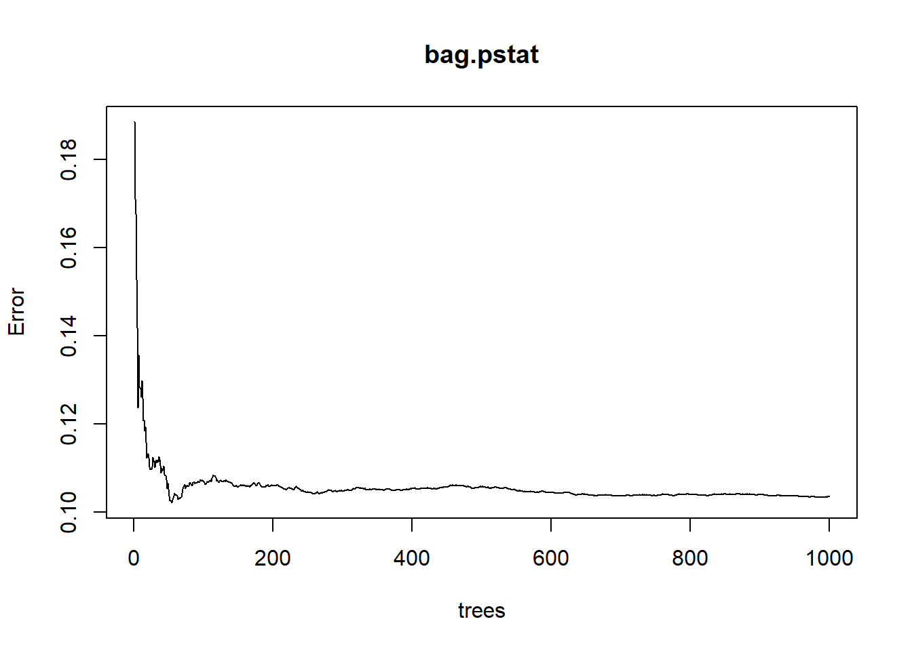
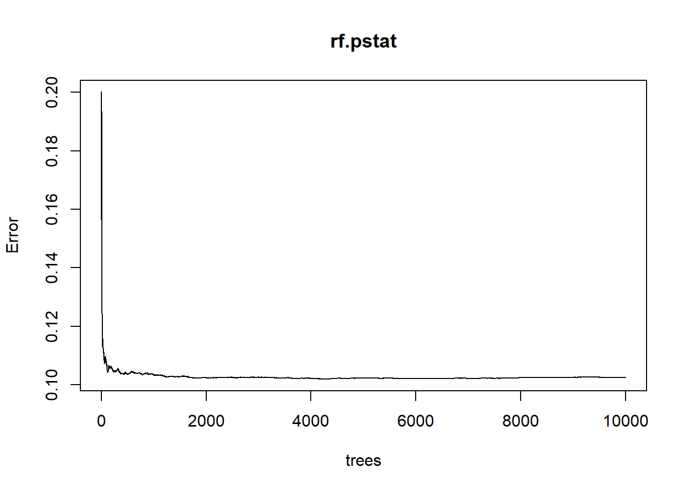

library(readr)
#library(imager)
library(dplyr)
library(randomForest)
library(randomForest)
library(tree)
library(gbm)
library(ISLR)
library(tree)
library(tidyverse)
library(tidymodels)
library(stringr)
library(rpart)
library(xgboost)
library(ggplot2)
library(vip)vignette-bootstrapping
Bootstrapping Vignette
Authors: Sarah Liang, Sharanya Sharma, Dannah Golich, Jason Siu
Introduction
Bootstrap Introduction
In statistics, bootstrapping is a resampling technique that generates many samples from a single sample. Bootstrapping has various applications, like estimating statistic sampling distributions and in machine learning to obtain adequate data for training, testing, and validation data. This vignette will cover the basics of bootstrapping, uses, and applications to machine learning.
Preliminary Steps
To ensure all functions in this vignette work correctly, we will load in relevant R libraries.
Data Introduction
To explore the capabilities of bootstrapping, we will use a data set containing grades from UC Santa Barbara students for courses offered from Fall 2009 to Summer 2023. More information from this data set can be found here at the Daily Nexus’ Data Github repository.
We will first load in the preprocessed data, grade. We will use various subsets of this data to explore different bootstrapping concepts. The pstat data set is a subset of grade including GPA information of students in PSTAT classes during the standard school year, excluding summer courses. pstat171 is also a subset of grade containing GPA information for students in PSTAT 171. We will be focused on avgGPA as our variable of interest.
grade <- read_csv('data/processedCourseGrades.csv')
# filter by pstat
pstat <- grade %>%
filter(dept == "PSTAT" & between(year, 2022, 2022))
# obtain pstat courses not including summer
pstat_not_summer <- pstat %>% filter (!(quarter == "Summer"))
# filter to pstat 171
pstat171 <- grade %>%
filter(course == "PSTAT 171" & between(year, 2012, 2022))Bootstrap Confidence Intervals
The general purpose of bootstrapping is to estimate statistic sampling distributions. From the sampling distributions, we can assess the accuracy of our estimate, like a sample mean. Bootstrapping also requires relatively few assumptions. The main assumption with bootstrapping is that the sample used represents the true population.
ggplot(pstat, aes(x = avgGPA)) +
geom_histogram(binwidth = 0.1, fill = "blue", color = "black", alpha = 0.7) +
ggtitle("Histogram of Average GPA of Students in PSTAT Classes") +
xlab("Average GPA") +
ylab("Count")
The histogram above displays the distribution of GPAs of PSTAT classes from Fall 2009 to Spring 2023 without the inclusion of Summer classes. As we can see, the distribution of GPA is not normal.
First, we will calculate a confidence interval without bootstrapping, then perform similar analysis with 1000 bootstrap samples for comparison.
# calculate t test without bootstrapping
print(t.test(pstat$avgGPA)$conf.int)[1] 3.266112 3.418543
attr(,"conf.level")
[1] 0.95# create function to calculate the mean of each bootstrap sample
calculate_mean <- function(x) {
return(mean(x, na.rm = TRUE))
}
# function for bootstrap resampling
bootstrap_resample <- function(data, fun, B = 1000) {
n <- length(data)
resampled_means <- numeric(B)
for (i in 1:B) {
resample <- sample(data, size = n, replace = TRUE)
resampled_means[i] <- fun(resample)
}
return(resampled_means)
}# Extract gpa vector from the data frame
pstat_gpa <- pstat$avgGPA
# Number of bootstrap samples
B <- 1000
# Bootstrap resampling
bootstrap_means_pstat <- bootstrap_resample(pstat_gpa, calculate_mean, B)
# Calculate confidence intervals
confidence_interval_pstat <- quantile(bootstrap_means_pstat, c(0.025, 0.975))
# Print the results
print("Confidence Interval for Bootstrapped PSTAT GPA:")[1] "Confidence Interval for Bootstrapped PSTAT GPA:"print(confidence_interval_pstat) 2.5% 97.5%
3.269708 3.423485 As we can see, the bootstrapped confidence interval resulted in a slightly narrower interval at the same confidence, indicating that bootstrapping can improve the precision of estimates made on a sample statistic.
Increasing the number of bootstrap samples can increase the accuracy of the sampling distribution. We will perform the same bootstrap process with 10,000 samples. In performing a bootstrap, one has to consider the computational costs compared to the accuracy one is hoping to achieve. With this data set, the cost of resampling 10,000 times was small due to our small sample size, but computing 1,000 bootstrap samples with a large data set may suffice due to high computational costs.
# Number of bootstrap samples
B <- 10000
# Bootstrap resampling for 10,000 samples
bootstrap_means_pstat2 <- bootstrap_resample(pstat_gpa, calculate_mean, B)
par(mfrow = c(1, 2))
# histogram of average gpa calulated for each resample
hist(bootstrap_means_pstat, col = "blue", border = "black",
main = "1,000 Bootstrap Samples",
xlab = "Average GPA")
hist(bootstrap_means_pstat2, col = "blue", border = "black",
main = "10,000 Bootstrap Samples",
xlab = "Average GPA")
Bootstrap T-Interval
When the sample size is small, constructing a typical confidence interval or even a bootstrap percentile interval may result in an interval that is too narrow.\(^1\) We will look at a subset of our data, pstat171, for a sample with small n to construct a bootstrap t interval.
ggplot(pstat171, aes(x = avgGPA)) +
geom_histogram(binwidth = 0.1, fill = "blue", color = "black", alpha = 0.7) +
ggtitle("Histogram of Average GPA of Students in PSTAT 171") +
xlab("Average GPA") +
ylab("Count")
Before constructing the bootstrap t interval, we need to define a function to calculate the t statistic of each sample and alter our bootstrap function to store each sample standard error for calculation of the interval.
# calculate t statistic
calculate_t <- function(x) {
return(t.test(x)$statistic)
}
# bootstrap function with standard error of each sample
bootstrap_resample_std <- function(data, fun, B = 10000) {
n <- length(data)
resampled_means <- numeric(B)
standard_error <- numeric(B)
for (i in 1:B) {
resample <- sample(data, size = n, replace = TRUE)
resampled_means[i] <- fun(resample)
standard_error[i] <- sd(resample)/sqrt(length(resample))
}
return(list(resampled_means, standard_error))
}# confidence interval without bootstrapping
print(t.test(pstat171$avgGPA)$conf.int)[1] 2.541061 2.765291
attr(,"conf.level")
[1] 0.95# bootstrap percentile interval
# Bootstrap resampling
bootstrap_means_pstat171 <- bootstrap_resample(pstat171$avgGPA, calculate_mean, B)
# Calculate confidence intervals
confidence_interval_pstat171 <-quantile(bootstrap_means_pstat171, c(0.025, 0.975))
# Print the results
print("Bootstrapped Confidence Interval for PSTAT 171 GPA:")[1] "Bootstrapped Confidence Interval for PSTAT 171 GPA:"print(confidence_interval_pstat171) 2.5% 97.5%
2.547878 2.762385 As we can see, the bootstrapped percentile interval is actually smaller than the standard t interval.
# bootstrap t interval
# scale the data first
scaled_pstat171_data <- scale(pstat171$avgGPA, scale = FALSE)
# Bootstrap resampling
bootstrap_t_pstat171 <- bootstrap_resample_std(scaled_pstat171_data, calculate_t, B)
# Calculate confidence intervals
# first find t statistic at 0.025 and 0.975 quantile
lower_q <- unname(quantile(unlist(bootstrap_t_pstat171[1]), 0.025))
upper_q <- unname(quantile(unlist(bootstrap_t_pstat171[1]), 0.975))
# calculate bounds of interval
lower_bound <- mean(pstat171$avgGPA) - upper_q*as.numeric(mean(unlist(bootstrap_t_pstat171[2])))
upper_bound <- mean(pstat171$avgGPA) - lower_q*as.numeric(mean(unlist(bootstrap_t_pstat171[2])))
print("Confidence Interval for PSTAT 171:")[1] "Confidence Interval for PSTAT 171:"print(lower_bound)[1] 2.546683print(upper_bound)[1] 2.768099Overall, the widest interval for this small sample was actually the t interval, and the next widest was our bootstrapped t interval. As such, the size of a data set needs to be taken into consideration when constructing confidence intervals on sample statistic. Bootstrapping can offer wider intervals for a small sample, but a bootstrapped t interval should be considered rather than a bootstrap percentile interval.
Bootstrapping in Machine Learning
In an ideal scenario, statisticians will have an adequate amount of data that can then be divided into training data, validation data, and test data in order to make the most accurate predictions. However, there are many situations in which there is not a sufficient amount of data that can be divided into these three categories. In such cases, certain re-sampling techniques can be used to provide sufficient data. One such re-sampling technique is called bootstrap. In bootstrapping, a large number of subsets of equal size are taken from the original dataset. Each of the selected subsets are chosen through random sampling, without replacement. The observations not selected are called Out-Of-Bag, which can be used to estimate test error without the use of cross validation. Approximately 1/3 of the observations tend to be Out-of-Bag. From the subsets that are chosen, the same statistical method is then fit on each of these subsets. For regression purposes, the mini models are combined by averaging the results, whereas in classification the mode is taken.
Bootstrap Diagram

In the above example, the dataset only has 3 observations, thus bootstrapping should be used to create a sufficient amount of data for regression. The total dataset of 3 observations is sampled 3 times without replacement to acquire the first bootstrap sample. This process is repeated “B” times to acquire B total bootstrap samples. Each sample is then fit to a statistical model, resulting in B number of models: \(\hat{f}^{*1}... \hat{f}^{*B}\). The mini models are then aggregated to form one model. This bootstrap aggregating method is known as Bagging.
Bootstrap Sampling Technique
# store each bootstrap iteration in a list
sample_list <- list()# n=10000 bootstrap samples
for(i in 1:10000){
sample_list[[i]] <- sample(c(1:10000), size = 1000, replace = TRUE)}
head(sample_list)[[1]]
[1] 5381 6859 9710 2968 8098 2552 9410 4340 529 4267 1762 809 6178 271
[15] 4195 5473 8152 2213 1740 2582 4387 9069 3446 6853 8392 5401 4647 7059
[29] 3312 7339 4986 3202 4458 5366 7162 5224 9896 447 6083 3865 653 6812
[43] 2825 1251 6281 4104 3418 8327 8216 2585 561 3639 7955 6471 5480 9845
[57] 5039 9174 5316 6064 7467 3278 7895 8832 3176 6922 8261 8999 4075 3460
[71] 2050 6913 962 1916 88 2209 9708 8185 4221 1886 312 1498 261 1075
[85] 5963 5383 9589 3897 2201 439 2972 2696 763 5453 2799 6482 2671 7962
[99] 7093 2780 8653 178 9807 9325 3455 6968 6518 7396 6048 6635 2751 7423
[113] 866 450 3156 635 4320 3612 1859 9343 8712 8194 7484 9794 5007 2388
[127] 738 9683 533 1176 7380 41 8538 7258 182 9480 4842 8835 8172 2259
[141] 5504 9433 4704 3384 6101 3482 1183 3535 5953 610 6341 5512 7016 5830
[155] 7123 5660 5519 2388 4420 7135 1688 3736 4909 8777 5458 1864 7041 8529
[169] 6907 9642 2630 1245 2535 4784 6302 1122 6792 3815 7309 5907 4024 4830
[183] 736 3374 313 2631 3467 335 5052 3040 934 999 2237 5603 4946 9092
[197] 7901 471 3533 5936 8076 168 9441 310 9832 4878 8821 5329 2554 6926
[211] 1793 4068 8748 1884 342 736 5094 6671 3016 3445 105 7707 2840 6100
[225] 3147 9198 8168 9855 4161 5043 5050 7035 1001 927 6028 8752 6438 8426
[239] 2694 4892 1662 8082 3744 8693 5559 316 6412 1144 3346 3239 6819 5340
[253] 2455 6534 3936 8161 3548 3549 9447 8282 5248 6223 5779 8724 2841 8531
[267] 9304 4054 723 623 9077 5044 8346 9879 6857 6507 6382 6825 1285 5174
[281] 3440 3117 1613 948 4470 7173 4995 8848 5074 6833 971 9024 7359 3800
[295] 5258 3038 2612 6680 8546 1481 4299 5215 8553 4756 3163 2415 5214 6622
[309] 1812 5256 3264 363 9179 4967 5912 1493 9653 6310 8580 9622 148 427
[323] 5326 6164 5710 2497 4513 8574 9447 1140 1772 2804 2707 1881 8630 7774
[337] 7143 7724 842 96 2428 5943 2703 7938 2471 6149 2124 4260 8693 7799
[351] 5454 9542 7901 7436 7854 2621 9576 8478 9445 5482 109 2584 5622 8127
[365] 2149 4771 4608 8552 7045 4197 479 3033 9261 3778 9407 5366 9585 9606
[379] 9983 1187 2074 2014 3907 8797 6799 6865 5596 5855 3424 6372 1321 954
[393] 539 7912 6235 8760 7033 3624 4524 2173 907 7517 1044 8003 7292 7353
[407] 5557 5652 8391 8131 5432 5840 3265 6112 7320 1730 8089 3416 6339 1612
[421] 2348 941 9223 7016 6142 808 5138 8470 3005 3448 2780 1002 2918 2117
[435] 9162 8595 5623 9581 9004 2657 9542 6060 7934 4385 1076 5782 3968 5506
[449] 3541 7984 4744 7186 9949 6406 4869 6935 3584 2095 1655 9498 8409 788
[463] 6172 3441 6397 5698 8994 6353 3209 2576 5692 7408 9977 2672 2425 4999
[477] 131 5850 6791 3927 5019 9527 2477 6628 8245 9214 6313 3184 2934 8240
[491] 6282 946 925 3077 6708 9058 4407 5962 9996 9208 7417 1331 7423 5484
[505] 2189 339 7447 6117 2536 2308 5821 1782 4935 5019 5996 2702 5243 6285
[519] 4024 2186 7990 2841 4017 6641 6845 5911 8115 9849 2426 2509 2527 2468
[533] 6963 5168 6268 5374 5959 896 2431 5324 6842 6542 1568 377 7396 4859
[547] 584 3817 1747 4053 8318 9445 1929 3485 9471 661 6820 1636 1689 2556
[561] 7274 2810 2615 3111 7606 1691 434 3514 1378 9540 3563 1914 7797 8909
[575] 4913 9274 1593 257 5375 7013 2043 2485 3977 7694 5669 7506 6452 6408
[589] 4561 9869 4528 5939 6421 8557 8783 299 3267 9337 610 8051 5340 2450
[603] 312 8619 7238 4882 385 7804 9763 4108 8160 374 9469 7466 3834 4244
[617] 1458 8007 1110 6944 7093 3991 3262 1528 2571 6103 9950 5764 5794 3207
[631] 5376 5677 5593 9354 5832 8535 4502 3476 7284 8351 6499 7410 8167 7861
[645] 6336 8518 4083 8462 958 8272 907 8724 7623 2600 3974 3880 7352 8949
[659] 4378 6577 2051 7422 2224 5181 5838 3694 4082 3904 4343 5343 4387 3854
[673] 3286 4033 9128 2745 3037 2175 8792 1369 3967 6872 7399 3174 5344 3517
[687] 5177 8912 3150 2342 169 6760 709 677 4990 71 1519 4752 2716 5219
[701] 2701 1727 4875 2415 5794 9115 8652 4192 383 6249 7875 458 649 2314
[715] 8215 5887 1806 8957 2643 5979 5058 9875 9333 8969 168 8762 3026 1079
[729] 4268 8008 3751 446 9809 2311 5044 8569 2099 7955 1504 4654 6121 643
[743] 9009 4983 9307 8525 9904 1822 5267 1915 1061 605 4830 5385 130 916
[757] 6026 9302 8601 6732 8307 224 9239 2661 5985 7965 1967 6306 9093 9504
[771] 7508 6265 3019 172 1438 1364 6618 5322 5207 9899 1982 5911 818 885
[785] 6018 2048 7708 8990 6137 4022 5554 2646 3635 7924 8199 9562 8770 1088
[799] 1897 6925 7158 3945 3853 8191 9198 7290 2354 5695 7387 1837 241 3102
[813] 9533 6450 1924 1449 3526 2562 2291 1298 9434 4505 1877 759 4287 3718
[827] 3252 7613 4312 7742 9149 517 8541 7176 2453 4677 4595 4843 8298 8809
[841] 5858 9538 9713 2110 7190 3791 7900 6104 6979 5388 2155 9270 3448 6355
[855] 7630 2233 3331 347 5785 2699 3165 4993 8620 8328 5819 7209 8473 9060
[869] 489 850 7420 778 896 2613 4515 2241 9972 2646 2629 3936 5548 9490
[883] 3873 7017 2435 3915 4683 8619 8663 1089 4538 4074 8354 1900 3272 9400
[897] 5788 9819 2229 7462 2339 986 1418 3271 5534 8476 4848 3918 5441 1107
[911] 8729 8468 5563 2390 7215 9853 4245 4768 3878 2233 3467 5934 9064 3137
[925] 4031 3609 4588 3440 9964 8931 7148 444 7850 1355 5113 6060 523 1847
[939] 7629 2493 8527 7963 8198 9464 4132 9335 5902 907 7415 3954 7730 2634
[953] 193 1256 6970 7895 4856 9223 1373 8617 5751 4800 7501 3618 8261 4207
[967] 895 820 6939 4076 3685 4264 4706 7642 8342 4215 5794 4481 8532 9879
[981] 3521 2983 2771 3466 6503 1087 2600 6235 9030 5979 9182 7934 6890 688
[995] 1015 9141 1862 3391 5829 2017
[[2]]
[1] 2699 8869 3755 3935 9255 635 9259 7753 6647 2877 4402 1173 3518 7804
[15] 1677 9415 1253 5343 8823 5877 3343 4823 2893 81 2660 7373 3539 5782
[29] 9552 5730 906 9732 2131 7772 3238 8100 8943 5581 7997 3538 6621 6204
[43] 9255 7635 8817 3333 4109 4368 2639 5367 7524 2232 8426 5245 186 737
[57] 1399 4351 3023 456 5555 4675 6965 1010 5554 6319 7080 265 6126 6355
[71] 3804 1767 6058 9204 2872 1176 5432 8373 1154 5076 7118 3482 8118 4252
[85] 3850 7148 1047 4909 1782 9653 6389 4084 8427 5468 6639 8102 7850 2433
[99] 4227 1895 5479 5873 1469 5774 3316 3553 6235 2466 1612 589 4376 6427
[113] 401 2566 4826 3832 6485 5303 1240 5607 392 271 1211 8466 2503 5614
[127] 843 9491 4713 4443 5898 6343 5169 7125 773 6001 8461 811 9611 9454
[141] 8336 3376 7911 754 2668 424 1757 6236 9854 1437 1361 9503 5600 1320
[155] 5038 4011 1892 3622 5079 4324 2950 4413 2600 4882 7200 5125 856 296
[169] 9738 8688 6727 9817 195 1833 9176 1126 4194 5841 2853 1661 7989 6358
[183] 4678 9808 7476 3593 140 9631 8183 1777 5691 4666 2615 2506 529 6792
[197] 8311 2121 1815 3163 1735 3367 4823 9379 9789 1368 8315 4908 7716 9113
[211] 9697 685 1909 3658 2335 4322 9416 4383 4361 6160 358 8266 4522 2921
[225] 4274 5906 9641 5152 6237 5634 9874 297 7989 3202 4165 8269 6781 1282
[239] 9064 57 2605 5441 9783 4266 4089 7029 6542 2125 9208 4769 6791 6582
[253] 2241 9180 4567 5240 1468 65 8070 842 6209 8303 9390 7655 8515 5595
[267] 204 2892 3168 2934 3718 9228 6038 7953 9513 4221 7135 3534 3425 9964
[281] 261 1852 2186 3228 3109 8809 5147 7737 1402 5964 3380 4489 7773 987
[295] 1458 6804 8986 6440 842 3474 3472 9487 7920 370 5213 3794 7181 1665
[309] 4987 6136 7081 5428 7910 1395 1940 1701 1807 785 3000 7482 597 3163
[323] 4489 632 9826 7758 1778 9993 5191 9277 503 6572 890 5470 5779 9233
[337] 6957 7002 353 3622 1992 9059 9015 452 6608 1787 2221 4664 1306 9765
[351] 4786 6845 513 218 5035 4628 1818 6009 1795 6900 4654 4969 6830 5620
[365] 9136 1531 4327 2584 6317 2280 1132 2408 8137 1303 5869 6315 80 9865
[379] 5728 8235 2029 4455 5048 4532 6290 533 4934 8663 7555 3158 4643 5574
[393] 1869 4473 9501 334 189 659 8023 2076 4892 4650 4818 510 4666 252
[407] 1990 4775 4109 2977 6547 2932 7237 7565 9979 6715 8938 4868 4399 255
[421] 9753 8386 9430 8338 2333 6025 5093 5654 3341 4702 1094 3654 4297 877
[435] 5870 8780 8600 9234 6458 4889 5840 8432 6806 2823 5268 9154 634 966
[449] 2360 4577 9008 5872 5795 3227 8782 1704 4256 2516 7302 8373 9913 3215
[463] 1688 4955 7128 588 1065 3107 2659 628 3370 1751 7812 1925 1360 9449
[477] 9317 4318 374 6793 8857 580 3479 421 378 5625 5405 5992 7577 955
[491] 2606 2838 7967 656 4520 5973 2510 1514 5614 2563 5376 6151 3420 5129
[505] 6355 8920 4783 954 596 8363 4946 9763 9177 2271 4664 8263 6428 3063
[519] 541 4560 6091 9238 7956 7850 2834 5054 5470 3388 9823 8513 815 4389
[533] 525 488 2133 177 3692 3530 8883 4329 5730 2975 7317 8858 7642 7908
[547] 7947 6850 1959 8939 7860 9323 2302 4420 3128 9816 8276 8714 4638 3992
[561] 4536 4336 9712 7679 7998 8180 1940 199 1080 9512 5314 249 7123 7796
[575] 9275 8804 497 4301 8481 2851 1367 6034 2053 1248 8422 6310 5215 1720
[589] 9937 1294 4933 3974 8641 8379 9103 5391 3489 3673 9348 5549 6994 7084
[603] 5805 6692 7265 4675 4213 7936 6044 1908 5328 4426 3071 7854 6080 6929
[617] 9270 2830 2477 8960 8741 9048 992 8085 1285 2050 181 2972 237 2679
[631] 7538 694 2619 1414 8626 3488 8287 3334 8450 8559 9111 8533 60 8921
[645] 3747 7088 5101 5823 2208 7516 2742 8202 2964 8169 4418 8723 2477 3167
[659] 9731 4903 5819 509 3983 3202 1261 2269 1600 9420 9701 5078 6932 1024
[673] 1570 5259 5712 7769 8565 5556 597 5336 4974 146 2790 3758 9688 5747
[687] 9537 6967 9592 2579 5344 8254 109 8948 1755 5879 6250 2503 5270 842
[701] 4436 3850 3173 9735 3670 1138 7299 8473 7784 8492 4153 8270 8289 7783
[715] 9598 3531 4668 1734 3058 9686 1262 7773 5002 66 5567 251 7705 8701
[729] 6087 6159 8612 3445 4113 2949 3772 4360 4342 6536 2680 2492 5491 814
[743] 36 3232 4801 2081 9949 2813 5274 1900 3609 4495 3317 719 7144 1382
[757] 8606 4580 2707 4464 1441 1726 1744 8376 8389 5298 4512 5931 1891 8532
[771] 1115 8738 9775 1773 1651 4793 5744 433 699 8647 8497 2562 3384 5115
[785] 9333 5634 5 1415 2085 7369 3986 2249 8158 3037 167 9074 3881 483
[799] 3424 4337 1020 240 1650 1113 8182 2017 5175 7533 2392 4540 5346 3442
[813] 6699 9064 5160 5034 8032 7329 4342 9174 9436 9145 4827 3229 4152 3137
[827] 9208 5679 4256 8850 3958 5581 9768 9704 6328 2003 158 6639 8946 9871
[841] 1858 1907 8833 364 8383 9065 5518 3438 1022 3125 8681 9283 921 3510
[855] 2678 6019 3814 1151 1190 3491 8490 1262 8853 2612 1738 4425 1820 7064
[869] 9274 6561 2991 1089 110 3037 2468 6216 8071 4715 3538 9487 4571 9264
[883] 6935 6982 6735 1285 2800 8105 4460 646 1931 853 1933 7231 8779 3188
[897] 404 8926 3539 9344 2491 4846 486 8222 7275 734 6504 2515 5065 5729
[911] 4435 8974 7847 2626 3038 6041 4374 6830 8482 2252 2946 5947 7261 6637
[925] 3557 6313 6121 7974 5542 5922 7011 408 481 6188 6770 7706 3639 404
[939] 8733 6192 977 6734 3205 1409 2177 104 6668 8999 7453 1153 1828 4762
[953] 6597 8183 784 7096 9614 5007 1722 233 7835 1878 3681 1482 8352 2233
[967] 630 9807 8994 5508 2443 4311 6675 9262 6567 8295 3397 3982 1201 1224
[981] 252 7264 7228 5054 9689 9455 3826 5991 6072 4404 99 3140 4876 678
[995] 6342 2565 3873 6918 1837 8328
[[3]]
[1] 4050 2926 4001 1167 6066 8550 642 5299 9664 5695 7083 5810 7031 6237
[15] 9228 9443 3251 528 6057 855 3171 7001 4308 3878 6713 3508 2720 8343
[29] 5903 2595 3887 7365 7875 3440 3072 6981 878 3498 2312 2390 8346 8816
[43] 3866 3520 8188 5400 5608 8933 6692 7006 5936 5132 7160 4564 4647 9296
[57] 550 773 9265 6779 8586 6657 4933 5365 4894 4840 6715 9145 2111 6123
[71] 5532 6130 9556 8086 1744 2833 6117 3957 3168 2012 6145 299 9567 1399
[85] 3166 867 3494 721 9763 8094 6460 8156 2927 6988 4397 6585 7094 8644
[99] 294 1715 167 6471 3214 5099 7263 2958 5405 1436 6894 4628 8007 428
[113] 8173 7947 1536 4809 1638 3847 1062 9821 998 7574 9635 5751 9240 2540
[127] 9552 7312 6113 6307 4699 4221 7314 2230 5386 1492 4061 6666 8404 7570
[141] 887 4488 4329 7950 1393 4768 9034 7235 912 8966 9541 5602 6675 7705
[155] 7348 1365 1008 9601 4959 4153 3375 6740 8915 791 4295 505 8499 1026
[169] 2302 2901 2310 4499 7565 1289 9641 9189 6347 6827 96 3057 7741 3001
[183] 6954 6812 581 6908 1042 6951 7660 1000 395 6050 5267 144 7203 6713
[197] 390 6883 3955 4334 451 2757 8253 2543 8308 261 4437 6095 6423 8218
[211] 5024 4955 8110 8531 9726 9132 9100 499 4408 1387 589 7931 6212 5636
[225] 8958 2329 7357 9951 8856 8055 9644 8555 1465 9572 5674 9313 4850 1224
[239] 8966 5376 9628 6896 591 3586 875 3103 5536 6198 7694 4021 6146 2899
[253] 2524 718 599 3105 3397 9305 99 3293 5043 5570 9107 7514 185 3092
[267] 1023 8571 9113 785 9290 4042 6720 1108 954 6712 3546 8712 7445 9788
[281] 6645 4229 8333 9787 5808 2694 7452 9961 1826 8914 7599 3568 9880 4472
[295] 3121 6581 2681 678 9895 2532 3562 261 695 7275 4402 5473 1426 2742
[309] 2384 8166 7333 3664 6634 3973 5388 3700 4617 3535 1589 3131 9731 4492
[323] 2002 1972 4973 8305 7958 4599 3460 8908 7056 2797 4687 3568 6639 7104
[337] 814 4167 9451 9464 8667 4183 7159 9995 2373 9234 7496 4214 4441 5777
[351] 7500 4516 7024 7769 8445 1449 7110 5156 9662 7498 841 4884 5285 7102
[365] 8177 9162 3576 1131 2213 8342 2260 7080 9917 4630 7516 826 4075 9023
[379] 2211 141 6662 5781 9427 5867 2067 4881 3805 8844 2891 4733 2787 6207
[393] 5691 4910 1872 8859 671 6248 4953 5673 6009 4757 8935 9402 1652 7041
[407] 8167 3532 8815 5410 15 2356 7060 274 8097 1620 544 8210 9339 8769
[421] 2479 4871 6075 1421 9638 7946 3946 4531 5629 8702 5097 3127 7803 4187
[435] 5357 9461 1933 8960 1686 7816 5530 238 1840 282 1055 8152 6203 4055
[449] 6212 6290 2002 7414 7385 3527 8735 7507 3169 7515 1897 3485 6135 965
[463] 5086 3552 4025 9987 2788 1547 9378 6872 1415 5072 2607 4430 4088 9362
[477] 4890 4793 8040 6885 1565 4858 1942 9372 5490 1355 4110 1373 555 8858
[491] 5272 2108 5617 8024 1395 7123 7285 6046 1963 4503 3114 6582 2973 9860
[505] 7468 4274 3119 5274 86 4409 5818 8457 6760 976 3502 4915 7777 8120
[519] 8358 694 4348 2858 5367 9632 8392 7414 5361 669 3851 8208 8212 180
[533] 3726 1756 4235 2752 1635 3005 9095 8084 7515 3038 9191 6817 651 8336
[547] 6084 7512 414 3733 140 7127 1485 7806 5634 9435 6051 1824 1674 658
[561] 5053 5267 902 5996 7949 3251 6 8560 8391 5440 5720 1921 6997 5491
[575] 2170 1548 4486 3032 4971 5394 809 3655 8526 9050 9997 7340 9479 6912
[589] 9247 1005 4632 8003 4480 6183 9138 4824 3042 5660 947 980 6520 2971
[603] 4324 9539 8718 2440 1089 4399 6715 7879 644 3199 5557 2338 1454 8935
[617] 2142 4680 6448 3908 1940 9250 4173 44 7925 6019 8722 8893 1727 9587
[631] 6319 1103 4773 7037 768 2543 6485 8109 2354 7600 1899 3306 3450 5400
[645] 494 3546 8702 8378 824 8412 7674 7307 6799 6406 3727 6252 6180 7317
[659] 704 3861 5168 6794 8997 7361 9222 1562 5615 620 5906 6983 5265 5775
[673] 9514 2904 5459 7883 6281 5837 6513 5725 1299 6725 7613 5096 1193 6208
[687] 2918 4166 2677 6845 4040 6276 3176 278 8019 7583 143 3689 8622 8721
[701] 6591 1926 7267 9208 6146 4285 2547 9340 4625 2250 7817 1246 2648 7789
[715] 1667 3360 875 296 8975 6303 2288 5589 1633 1796 274 419 1445 6199
[729] 7131 8961 1399 6801 2451 7734 6802 4779 8574 811 6540 9227 4873 410
[743] 2920 3808 264 9312 380 7336 3287 4804 987 4968 9868 7591 5291 5640
[757] 7002 4907 4481 2331 7678 8939 4941 8563 2595 3141 9713 36 6670 7505
[771] 239 6829 2588 3842 2346 9528 3802 5759 1132 6661 2621 5708 2971 7832
[785] 6455 4014 7909 4353 6437 3679 3448 6037 9990 6336 9467 4640 5942 8377
[799] 3546 601 9564 9696 6874 9719 9761 3174 3700 3311 6227 2625 9736 8091
[813] 5629 5762 9273 1935 4817 3380 3618 659 973 3939 8713 6460 5959 450
[827] 3573 1862 9380 1520 4440 8951 8590 1378 6355 2698 6911 1160 7681 9598
[841] 5826 8351 9086 9887 4130 6054 1793 8967 5304 7740 6981 7248 2209 8673
[855] 8527 6991 9774 5499 4604 7097 6081 5451 9230 3765 2877 2059 2501 2173
[869] 7533 8066 4839 1323 7077 3631 4614 9708 1916 8897 1166 9037 7229 7094
[883] 9811 4782 6809 7413 8015 3673 5712 8109 8739 554 6255 5037 6775 1674
[897] 7956 1385 6022 9364 9957 233 705 1775 4968 363 827 5686 8141 6171
[911] 8374 5790 6671 1779 7136 8093 2114 1525 4581 3391 2151 4830 7541 7475
[925] 734 341 7647 2381 7152 3405 4186 5904 9746 2216 9975 5376 894 481
[939] 7536 4914 8180 9201 6723 2098 8192 5190 1671 1599 3272 8103 5196 6764
[953] 3501 4963 6356 1267 7934 2924 4696 2864 5399 1115 5592 4556 7296 9902
[967] 9368 4977 9592 2223 2484 8891 8617 4039 2096 5970 9035 9786 4295 2819
[981] 6775 7177 7532 62 2940 9471 7513 3094 1617 1367 713 7594 4832 6317
[995] 2608 989 6609 9044 7361 8208
[[4]]
[1] 5605 7429 1245 9314 2416 7284 8664 1338 218 2410 6232 1800 1010 805
[15] 3993 2335 9285 4347 4330 4092 279 1879 2238 2814 8002 5035 4751 6867
[29] 5343 3976 4395 371 7184 3297 1784 8763 3511 9852 6813 9097 3927 1148
[43] 3384 5024 6156 7437 2739 6587 7425 6340 1352 1285 9522 1654 171 4128
[57] 2677 1544 4305 2621 8717 1961 6763 7773 8776 9641 6931 5634 7678 9672
[71] 8958 6789 6243 631 3790 6821 5272 7984 9055 5286 6097 5472 5966 4975
[85] 8346 3298 5614 1061 3436 3201 5947 3207 9897 889 4504 1594 6669 6417
[99] 6235 4997 7494 7469 2964 94 8066 6948 401 8556 8556 152 6814 1233
[113] 5075 1355 6632 886 637 8191 4557 1815 7107 5472 6214 5501 1535 7294
[127] 5482 6940 6138 4124 1361 618 3960 5666 9896 4768 790 3864 4587 531
[141] 5844 8618 221 874 6877 9498 4751 4584 9385 6689 3101 9958 1053 5041
[155] 8690 5319 7264 3578 2699 3061 3236 5632 7871 2376 7229 7382 4146 1696
[169] 3752 8386 7337 2611 2907 4712 5750 7909 2118 4697 578 2717 7090 9955
[183] 5292 4066 2294 5035 8208 9278 8126 2580 9857 7083 3333 2626 4863 1360
[197] 819 2599 9775 7755 225 6085 2869 1565 8450 7709 434 4278 3904 5912
[211] 5436 3456 7680 7686 7288 7022 2067 9691 8593 4246 7428 8851 5446 7752
[225] 1446 4328 893 1404 9600 3290 3381 1696 8343 4581 4652 6724 7100 9204
[239] 837 8433 5883 5879 9280 9461 750 4572 6864 3109 8817 550 5959 568
[253] 6484 1318 1076 5272 5518 5651 3622 2010 4086 2317 9772 5146 4822 1257
[267] 3030 4752 287 1638 9607 604 7495 8864 5237 1215 1827 4338 2643 3264
[281] 1629 2813 2171 4998 4282 4576 2949 6801 7596 967 6104 3767 6384 6098
[295] 676 8314 3018 3017 6883 6039 2156 8258 1206 9398 1228 4397 305 5870
[309] 4742 4787 1176 7492 7250 1085 294 5820 3906 1222 1536 6791 3859 6724
[323] 464 1675 88 1235 8901 3378 7889 7934 880 7652 859 5182 3447 1396
[337] 610 5122 7989 9641 5006 1020 3177 1031 9672 6678 8423 423 8761 1685
[351] 8842 5859 249 6063 8007 4971 7766 1826 5065 8105 8262 7005 7035 2252
[365] 2125 1324 1246 138 9048 8284 5309 3376 5145 8381 4732 1908 1904 1580
[379] 4817 9355 7354 6304 9432 3349 6952 2292 770 3701 5192 2957 9493 5430
[393] 1220 4256 8702 4065 9640 4587 8023 9708 5974 1357 8856 4087 7805 5819
[407] 5646 4614 5443 9008 1496 8585 8724 1730 6595 6694 276 2008 9392 6023
[421] 872 7057 551 1476 4697 686 6005 7134 3261 3233 3341 10 4736 7150
[435] 4935 6885 8993 3283 573 4693 8449 3077 5238 9021 4184 1726 495 3908
[449] 1381 5433 3974 7649 5768 7708 6938 52 7175 6087 2087 1252 9623 7555
[463] 7091 387 8963 7118 9105 7299 7045 9213 8644 2392 8258 1476 9116 7153
[477] 1612 8630 3369 3560 3176 4084 7992 6411 8307 7958 4493 2587 3747 9380
[491] 7246 6407 8032 5844 455 3904 8362 7416 8208 6541 4859 5359 3704 1118
[505] 624 7291 3080 9465 4936 6373 6444 6060 5963 5475 8467 9682 2365 5870
[519] 5952 891 6131 6920 485 4863 9680 1659 434 2013 895 2680 7836 2035
[533] 7174 7047 6503 2550 5918 5076 493 6419 4603 3318 5672 2711 1832 6491
[547] 9981 5753 6925 7814 588 5347 4474 289 8817 2518 6670 3238 8138 624
[561] 3121 429 4108 8876 3019 389 1715 3671 4139 9741 904 6674 5468 9524
[575] 9458 8955 1141 3719 4313 4445 232 6737 2601 8591 4569 7801 1189 3840
[589] 390 4130 2908 7689 6423 4489 2690 2133 8687 701 8149 787 7941 3305
[603] 1411 7357 4478 4353 2476 8686 6907 8962 2976 6030 4308 4971 6149 2345
[617] 5124 4591 6030 4635 2633 4420 7567 1026 1502 2385 8630 9251 191 8937
[631] 1159 8813 6803 9419 2758 1638 1873 6415 8888 689 8532 4915 9730 5884
[645] 9372 8441 647 529 8977 1384 7640 1534 3405 9826 7365 3802 3055 2959
[659] 3813 3354 5627 3510 6284 7178 1463 6599 1009 257 2890 6944 7924 2628
[673] 5566 5554 6392 8 3890 9561 4828 1424 5049 3596 5498 2076 8181 6849
[687] 2976 2636 3767 3973 1412 3047 3371 9623 8620 1652 8655 5662 9213 9277
[701] 8004 9171 2212 722 7438 5108 3678 2354 7622 6026 1071 907 4930 3627
[715] 6734 9955 4205 6146 4007 2344 8273 4260 3403 1847 2663 6568 2728 2393
[729] 6896 8558 5241 9076 4032 3844 5335 2389 5180 7648 4714 8827 392 9815
[743] 5565 3666 8607 5364 7858 5453 2283 5974 6827 5337 2857 1489 9799 6511
[757] 6117 5403 9654 240 1762 5457 5606 7408 3357 8735 6106 5393 3839 5533
[771] 1384 517 1356 4733 2425 9408 810 9327 9608 6663 8485 158 8427 6140
[785] 7889 2311 2496 3984 1358 5461 4442 4016 3595 3423 4466 4334 477 5596
[799] 144 7316 1072 9895 1123 1484 5147 2415 3010 1361 5795 8150 6853 4833
[813] 7127 8799 3684 117 6304 524 6426 7559 9477 5275 1665 4690 4494 1964
[827] 2997 2887 8961 4651 9141 9538 5813 579 1146 5062 4430 845 6573 4328
[841] 4132 3652 2543 2788 2106 5077 7736 8848 4750 7354 4845 1357 3757 8172
[855] 9739 5946 6549 2879 4491 4544 6017 659 2058 3523 763 8852 5217 5827
[869] 3685 2170 203 2545 4116 9681 4267 208 731 9459 1650 4432 1195 8247
[883] 2055 124 9496 7579 5827 8582 9915 2343 5816 5238 5640 716 2246 5741
[897] 1701 2077 287 8691 3464 7443 2866 2695 7124 4401 8366 9495 5696 7634
[911] 2325 8548 5146 3739 7876 5509 7107 8766 9358 1898 2694 62 1527 440
[925] 3085 3486 578 3698 5840 7079 6509 7862 7046 6101 1390 9952 5119 4040
[939] 19 5968 9787 2772 6693 670 4297 6549 4863 3207 6457 995 151 4705
[953] 6007 7223 1708 3435 3068 6040 9244 8208 7345 8746 8299 9846 8646 2836
[967] 6805 4776 6414 6668 316 4201 5623 9631 2314 2562 2053 8938 9435 9626
[981] 904 5874 1316 5234 1027 477 1363 7508 3994 7899 7187 7098 9165 6683
[995] 8365 8675 8960 4423 9278 9022
[[5]]
[1] 9861 627 4003 1130 8913 5386 8206 5369 6079 7872 3142 6828
[13] 4171 7256 5377 469 2649 1047 7159 915 5281 567 9253 1557
[25] 236 4714 639 761 5159 8081 5301 562 1487 8407 282 4170
[37] 5411 9804 5223 2549 7849 4461 7791 1238 2018 4897 6249 9103
[49] 1003 2790 5721 8739 8856 6884 4624 2981 2652 6136 2981 693
[61] 433 6350 3282 11 5877 1952 4858 767 4584 9432 7547 5684
[73] 4126 6843 1699 112 2457 7680 4243 7101 6011 8889 7882 4285
[85] 9609 1716 6869 8938 7050 9870 586 799 3240 2492 7376 8348
[97] 5311 6389 5621 7124 2852 4572 1387 8470 1325 8822 4687 214
[109] 192 7283 8498 1331 9353 3891 3904 3976 6714 911 5628 5978
[121] 7742 883 7398 4482 9550 154 9475 2765 5794 9173 189 3317
[133] 5406 4636 784 2102 8578 1230 484 3977 7875 96 6582 1521
[145] 7722 7353 9924 1508 9716 812 9096 5251 988 5800 7659 1449
[157] 9130 8047 8165 2410 9431 2587 5762 1705 9194 1659 5337 4639
[169] 3598 7841 9438 135 4469 2798 5497 6853 2587 532 9809 2052
[181] 5903 8249 1702 4419 9418 4687 6889 4563 2216 8810 3342 9659
[193] 7605 446 3590 9982 1009 9947 4665 857 3857 2156 7236 6122
[205] 7798 8434 1664 1798 9940 5655 260 6379 1634 4121 1745 4935
[217] 7776 6632 8457 4483 7757 49 264 5937 4709 8593 3580 2032
[229] 2354 3933 6761 2803 817 9281 4530 9081 1249 6418 608 7197
[241] 9988 6246 934 111 1960 1632 1428 9399 8969 3310 1274 6941
[253] 5694 7062 5753 6490 4564 3784 3658 1879 8211 6118 9288 6843
[265] 925 9675 8694 5698 6626 5840 9493 3372 8004 7666 4876 4665
[277] 4472 5175 9614 6929 7085 8076 2713 7784 2586 1395 5221 7959
[289] 4431 6643 705 3977 4337 6990 4506 1221 1237 9693 2749 5753
[301] 1064 2127 6011 1991 57 9113 4474 1238 4491 9171 6723 640
[313] 3921 5575 7687 8488 7491 5904 2358 7507 2916 7156 8750 7676
[325] 825 1895 3407 2031 2745 3802 2440 8207 1157 370 2754 4852
[337] 9447 2615 8864 9033 1652 2560 8137 7485 7021 9090 972 9115
[349] 1134 1759 8744 5270 2775 2403 6225 9699 8135 604 7910 7315
[361] 1135 9296 3739 4460 1134 126 2172 5986 6183 4553 6523 517
[373] 7360 4260 4278 2276 340 4074 8506 1588 9096 2177 1283 1565
[385] 2332 5462 2517 8907 7199 5355 620 4827 1709 3195 5471 1322
[397] 4760 896 7430 4055 8788 6906 9877 9059 8489 2204 4358 8092
[409] 4483 4854 6878 5311 299 9971 911 3604 6865 4909 1389 7397
[421] 3242 9464 9791 3851 500 3664 1179 9585 9160 9563 4041 858
[433] 9196 147 6869 318 7719 7110 1393 1665 275 5766 7529 3574
[445] 829 4923 4564 8371 8649 3822 7967 3822 8088 9717 3539 5701
[457] 2706 2053 8808 6313 9941 5156 3988 2525 8518 5350 3836 504
[469] 9855 5678 555 2007 7034 8281 2786 2350 7074 645 85 181
[481] 7644 4665 9756 3206 9572 7863 5868 749 6001 4630 858 231
[493] 3345 5477 1902 1000 1248 3304 1447 2505 8293 6573 8101 7101
[505] 8041 6842 6907 7321 4721 67 4577 5287 7302 4513 814 2100
[517] 3295 2121 271 138 7357 7113 2761 148 6730 2489 5275 6575
[529] 22 662 7748 1431 7903 2939 5978 6922 1641 1154 874 2864
[541] 4986 3747 4726 9172 5938 5473 6017 796 6133 3087 5115 1789
[553] 5088 4272 9551 7355 7833 4731 7540 8067 3401 522 4510 6019
[565] 507 654 401 7271 9742 438 8775 9531 6375 5834 5458 5672
[577] 1413 5801 4634 5446 7976 5537 8588 2768 8233 4573 7421 4711
[589] 7344 4086 3672 6441 1984 7674 3570 8148 8245 8425 9755 6628
[601] 1480 85 4752 1591 3420 115 5831 7871 2165 5286 5376 9481
[613] 1356 1592 1354 4754 4035 3158 9201 2195 6722 4193 9059 5228
[625] 4671 3151 6886 5386 4722 7356 9325 7919 4263 5967 4110 8947
[637] 6056 1291 5079 2102 5168 5981 8112 1174 6963 2202 5273 6875
[649] 9205 3553 6642 1689 1790 4518 7508 3614 4213 7075 4703 3156
[661] 3907 6105 6337 3857 7763 4329 7147 8766 3633 3838 4349 8782
[673] 8738 4106 8518 2373 782 647 56 4744 3321 1411 2690 9254
[685] 384 6127 7940 3222 7318 5843 9680 412 6851 5831 1235 6202
[697] 6953 2912 2146 4690 9808 6488 1218 6004 6065 6999 7757 9331
[709] 3939 3737 5796 7595 2474 7223 3034 5062 8402 2160 2201 3376
[721] 8834 7568 6892 3702 4756 7887 4198 659 4519 2981 4569 664
[733] 5953 4882 682 8773 9245 6863 2503 5040 3943 9985 9362 2825
[745] 6777 2764 254 6248 9557 5993 4081 5980 2112 6827 9722 7434
[757] 4852 5681 5011 3114 6539 2994 524 5420 8189 2764 1598 7655
[769] 1756 786 188 2375 974 4789 4572 8022 110 4641 6763 5326
[781] 4064 7652 2305 7669 8263 2212 4155 131 5396 2384 4935 5992
[793] 911 3084 7413 6501 3013 846 2379 7536 9847 705 2287 5108
[805] 8663 20 7942 6630 8229 480 923 4046 3456 1684 2254 7940
[817] 4672 25 6376 1031 7988 8967 8969 535 7282 3225 1350 6091
[829] 6639 538 2811 7979 2909 9240 6671 3890 2732 6262 3009 461
[841] 2179 3345 2220 4508 1543 7165 7456 955 2446 3578 6081 7575
[853] 6382 1271 7642 2055 6838 2529 8883 7599 7309 6995 6949 787
[865] 5248 5328 4683 3189 9436 5243 9797 9808 9110 113 6 6379
[877] 8155 8921 1146 8354 1313 7671 6885 2548 6691 4171 9262 1765
[889] 1733 4601 5192 3878 3176 6619 2779 9664 1910 5218 598 2864
[901] 9780 1797 7567 4656 3785 312 7923 5749 9644 6520 3262 449
[913] 5291 8948 5850 3884 828 5803 5700 4750 4567 288 3992 1146
[925] 9138 1234 6882 2445 245 448 7736 9402 6209 6291 8885 2697
[937] 2762 7758 8428 3889 7308 2311 1979 3956 1536 3616 1647 6106
[949] 1737 3539 10000 783 8837 6826 3556 2406 1835 6117 8934 1587
[961] 6838 8958 433 2573 3630 5217 7924 3271 8579 1381 3732 3213
[973] 1698 122 393 7902 7859 3123 4908 9972 9993 7312 8332 1050
[985] 3645 5988 5531 7286 1411 5355 95 9340 9048 8007 1551 4229
[997] 5707 1443 6 4753
[[6]]
[1] 4880 1450 7325 5361 8400 6688 4595 6381 6090 6405 927 2954 5510 8820
[15] 701 8369 2735 2091 710 1422 1541 5965 1552 7678 3703 7975 480 817
[29] 1794 3850 929 2056 3047 6838 8127 1514 1872 7865 5722 2546 4206 7379
[43] 4926 4615 7943 1013 9186 7378 1999 3420 3096 1795 6275 9939 2274 4250
[57] 7623 8219 9747 636 485 3717 6994 9688 3665 8424 7453 2662 2867 3900
[71] 9980 4974 7432 9961 1504 5607 5347 9593 5015 3693 7927 3219 156 3662
[85] 2250 1298 7116 4230 7551 5863 255 7102 9489 3317 9057 3056 6617 9853
[99] 4729 6030 9027 8102 934 2740 6251 9706 3826 6738 9388 6597 9470 6494
[113] 5809 9242 3097 1076 3945 3933 1386 7548 4672 9102 9584 2562 6788 157
[127] 3770 9810 4745 3240 8054 7380 4302 6697 3875 8588 4687 5341 8875 5165
[141] 8878 7580 2866 1854 6377 3389 1798 5829 5682 3522 2212 6300 6715 3914
[155] 370 1691 1031 111 8989 471 9080 6976 6172 8105 7576 1697 8916 1836
[169] 3620 8962 2560 8073 1438 3895 1581 268 9966 8830 3332 9768 4383 6534
[183] 4723 2573 4478 6530 6448 3239 7573 9401 7062 8434 2780 1581 3862 261
[197] 7835 9456 5465 7138 3525 9355 1162 644 5736 3270 9222 677 754 8561
[211] 2513 7867 3956 5068 6463 4313 7808 3911 9095 8183 2492 8219 8364 866
[225] 9280 1519 7598 7322 7422 9257 4113 6841 9554 9200 4964 7966 3171 6716
[239] 4812 1416 2244 5947 1966 8563 2066 8680 1174 3943 9286 1313 2488 9861
[253] 5534 6254 5015 4303 2710 5821 2451 6248 5655 2859 612 5689 3522 6954
[267] 56 9685 9561 7695 3835 2507 9302 9599 4287 8081 6380 1276 9274 130
[281] 3303 6908 1133 5731 5336 7813 8918 3277 9655 4131 4168 5564 1732 5886
[295] 8791 9871 6933 5588 9279 3518 6917 8070 8931 1969 3199 2041 7549 8021
[309] 8136 7988 7671 5553 6801 3011 5615 984 9380 658 9791 5379 4413 5566
[323] 2221 1934 4613 1456 6161 7633 6719 3930 5010 2897 7936 1524 8506 3831
[337] 6719 7042 9876 2156 3658 8201 7 8498 8061 3584 671 5104 7129 5685
[351] 4289 1435 981 2871 8354 6626 4485 4494 3666 849 2627 6339 2550 8138
[365] 9366 4289 8460 3855 1227 8190 7454 7191 3999 8731 5600 6854 8265 3384
[379] 9303 214 7633 3611 9758 6450 5711 6313 483 8711 3936 1052 8627 1542
[393] 9296 3189 6600 9151 1632 674 1092 3525 113 3573 8113 2319 1074 4314
[407] 1937 1835 3747 3995 3117 4798 2573 8657 3633 6407 570 8995 4640 2033
[421] 2421 238 2504 6185 6833 9697 5427 9162 2659 1368 9488 111 7910 8206
[435] 6907 9714 4594 6520 2433 4023 3345 974 3136 2620 5803 8279 932 1991
[449] 5880 525 8354 4016 36 335 2596 3751 4480 9708 6489 3043 281 8052
[463] 2764 7357 4420 1978 1104 7429 5653 7313 6390 9691 9684 1134 6225 8296
[477] 9073 3984 2047 7824 8278 9009 7189 1638 1367 5969 8154 5161 1615 1438
[491] 8586 6316 49 4086 6461 1285 749 9503 2728 7735 390 2286 8746 7517
[505] 1127 4234 3517 1279 9089 6985 4202 6042 8033 2464 3128 6661 749 8284
[519] 6844 9445 6673 5328 2776 5570 7646 1039 2060 7795 1838 2070 7969 433
[533] 9585 5934 8255 4402 9302 905 8760 1220 309 5205 4951 3594 5381 9254
[547] 3272 3467 4410 5510 3002 2757 8612 7435 3298 529 1997 1791 3222 6779
[561] 5313 5819 6131 5863 9328 6549 5728 7833 403 5389 7228 414 9519 903
[575] 5207 2033 8525 550 3474 6762 2344 3166 6125 8471 4905 1794 1009 9045
[589] 7129 8597 7024 6125 7706 1011 5628 265 7636 2056 2300 2458 1956 7250
[603] 1541 9019 5839 6239 410 5995 2555 555 8442 2004 8811 7981 2498 7773
[617] 4909 5472 3139 4972 835 671 807 2411 9077 8368 3720 3718 2087 9747
[631] 8095 1851 2129 2387 5238 5014 9853 7360 8866 337 8940 477 721 8237
[645] 6985 994 9908 1650 9907 229 1036 5916 8912 4660 3224 9476 5634 3770
[659] 458 8893 786 2120 2069 1270 2182 7465 6443 26 3937 2261 268 2422
[673] 5359 9654 1668 2137 6879 9394 6033 2014 1706 7115 83 4236 8144 7407
[687] 6690 1753 219 8818 5214 2757 9767 6981 8462 3304 8571 6986 1939 7701
[701] 2022 4310 9526 6755 2339 3945 6218 6430 6101 1982 8391 7107 6862 5460
[715] 1924 9954 2589 8988 4055 1370 6474 181 2753 7596 2279 7141 2977 3267
[729] 1430 8857 5454 4438 7878 3236 7902 4562 4003 2840 4611 8545 6002 5247
[743] 5588 1714 2045 1849 5579 2034 4664 5248 5934 2876 7451 5566 6063 5716
[757] 267 5778 5164 3340 7010 3136 532 5181 7838 3938 633 5398 3528 5988
[771] 8639 87 1430 1084 4740 4290 8317 8031 4053 5616 6450 4052 6696 6774
[785] 4496 8894 6028 826 9908 7807 4041 5830 4275 6937 8163 5781 6702 3228
[799] 8748 6083 5862 3011 9936 3835 6986 1728 7546 7531 1009 8666 9429 494
[813] 2969 8762 110 2864 4293 6666 3502 6723 988 4444 6371 4602 5452 9972
[827] 7780 1674 8872 1776 1619 5108 3237 1853 6451 8562 7318 7394 6289 4210
[841] 2645 3397 7465 2635 8181 3706 7617 1589 3298 2313 4573 1962 7163 564
[855] 2052 1059 2470 4798 110 9968 3487 5142 979 9764 4155 1658 5959 8396
[869] 4411 8073 1161 8512 9123 9102 5876 309 7608 6507 2514 6267 1712 7393
[883] 4230 6463 2702 9488 2610 1801 2591 1624 8222 5633 4568 636 2227 4416
[897] 5205 6070 4860 1287 3223 588 6749 6852 8459 6101 6249 1497 445 6321
[911] 7492 1332 5049 261 7524 4611 5545 543 7573 3029 5031 4719 5623 3084
[925] 6433 4221 8358 7784 7388 3320 9422 139 2645 1219 6975 4799 7399 909
[939] 2739 1238 201 8619 6534 9457 6090 3831 1698 2 5482 9476 4760 4237
[953] 4246 9234 7955 2319 4490 1346 457 2373 9500 4019 1776 8053 6218 7199
[967] 8643 7269 5509 155 2349 4538 8983 1227 43 8899 7270 6124 5378 7209
[981] 5449 9267 4693 7226 6948 1883 9745 2439 9684 136 357 1055 7493 8224
[995] 3026 3407 3121 2191 6712 8058The head function prints the first 6 bootstrap samples. We can see that each of these bootstrap samples include 10,000 randomly sampled numbers without replacement from the original 1000 observations. The entire sample_list is populated with 10,000 samples, where each sample holds 10,000 observations.
Out-Of-Bag Probability
# select a random number to test ratio of missing observations
random_num <- sample(c(1:1000), size = 1, replace = TRUE)
# calculating out-of-bag probability
count <- 0
for(i in 1:10000){
if(random_num %in% unique(sample_list[[i]])){
count = count + 1
}
}
probability <- 1-(count/1000.0)
probability[1] 0.034Run this code chunk multiple times to see how the probability changes. We can see that each time the probability is close to 1/3.
Random Forest Applications
Objectives: Understand how bootstrapping works on smaller and larger data sets; Understand what bagging requires of the parameters of a random forest model; Understand the effect of bootstrapping and bagging on tree models (e.g. random forest)
Bagging, or bootstrap aggregating, regression trees increase prediction power of single tree models that have high variance and poor prediction.\(^2\) However, bagging regression trees suffer from tree correlation. We can solve this issue be using random forests, which are a modification of bagging that implements a larger set of de-correlated trees.
Let’s examine how bagging affects a prediction problem by implementing bagging and compare to a normal random forest.
Setup
# sample 80% observations as training data
set.seed(3)
partitions <- pstat %>%
initial_split(prop = 0.8)
train <- training(partitions)
test <- testing(partitions)
dim(train)[1] 103 8dim(test)[1] 26 8Check the dimensions of your training and testing split before continuing.
Bagged Random Forest Model
Parameter Tuning
Notice how we have 7 variables, one of which is our response variable avgGPA. If \(p\) is our number of predictors, in this case \(p=6\).
Let’s begin by training a random forest model with bagging.
Keep in mind that bagging will lead to correlated trees, since all predictors are considered at each split.
The mtry parameter in randomForest() reflects the number of variables randomly sampled as candidates at each split. When implementing a random forest model with bagging, we need to set \(m=p\) where \(p\) is number of predictors. So, \(m=5\), i.e. mtry=5. By setting importance=TRUE, we will assess independent variable importance in bagged trees.
# build a bagging random forest model
# bagging is random forest with m = p
bag.pstat <- randomForest(avgGPA ~ course + instructor + quarter + year +
nLetterStudents,
data = train,
ntree = 1000,
mtry=5, importance=TRUE, na.action = na.omit)
bag.pstat
Call:
randomForest(formula = avgGPA ~ course + instructor + quarter + year + nLetterStudents, data = train, ntree = 1000, mtry = 5, importance = TRUE, na.action = na.omit)
Type of random forest: regression
Number of trees: 1000
No. of variables tried at each split: 5
Mean of squared residuals: 0.10362
% Var explained: 43.96Plot the errors achieved.
# plot the errors
plot(bag.pstat)
Notice how the error decreases as the number of trees increases, i.e. as our random forest model is further trained.
Test Set Error
Let’s predict on testing data and retrieve a test set MSE for our bagged random forest model.
# predict on testing split based on exact class
yhat.bag <- predict(bag.pstat, newdata = test, type = "response")
# retrieve test set MSE
test.bag.err <- mean((test$avgGPA- yhat.bag)^2)
test.bag.err[1] 0.1932657Try increasing the ntree parameter to 10,000 (i.e. the number of bootstrap samples).
# increase ntree
bag.pstat2 <- randomForest(avgGPA ~ .,
data=train,
mtry=5, ntree=10000, importance=TRUE)
# retrieve test set MSE
yhat.bag2 <- predict(bag.pstat2, newdata = test)
test.bag.err2 <- mean((test$avgGPA-yhat.bag)^2)
test.bag.err2[1] 0.1932657Does the number of decision trees affect the test set prediction performance of a bagged random forest model?
Unbagged Random Forest
Now let’s implement a random forest model on the original training data (no bagging) and retrieve a test set MSE to compare to our previous MSE result.
Parameter Tuning
If we want a random forest model with no bagging, then we have to use \(m<p\). Let’s set \(m=3\).
Setting \(m<p\) allows the random forest to create uncorrelated trees. Typically, this is what is preferred.
# build a random forest model for classification problem
# use a m smaller than 5
# mtry = 3
rf.pstat = randomForest(avgGPA ~ ., data=train,
mtry=3,
ntree = 10000,
importance=TRUE)
rf.pstat
Call:
randomForest(formula = avgGPA ~ ., data = train, mtry = 3, ntree = 10000, importance = TRUE)
Type of random forest: regression
Number of trees: 10000
No. of variables tried at each split: 3
Mean of squared residuals: 0.1024466
% Var explained: 44.59plot(rf.pstat)
Test Set MSE Comparison
# obtain predictions on testing data
yhat.rf = predict(rf.pstat, newdata = test)
# obtain MSE
test.rf.err = mean((test$avgGPA - yhat.rf)^2)# compare normal random forest model error vs. bagged random forest error
test.bag.err[1] 0.1932657test.rf.err[1] 0.1762302Compare the MSE values for bagging versus random forest models.
Does the random forest model provide any improvement over bagging, in this case?
Finishing Thoughts
In this case, the bagging model achieves a better prediction power. However, even if bagging achieves a lower MSE, we would wish to avoid correlation between trees (i.e. correlated predictions) which somewhat invalidates our results.
Also, for a regression problem like this one, if we wanted to predict trends and create a more powerful predictive model, then we cannot use random forests. Random forests are unable to extrapolate and predict values outside of the trends present in the data given. \(^3\)
One way of combating this may be to turn this into a classification problem. You may also consider other more regression-applicable models (regression-enhanced random forest (RERF), SVM regression, deep learning NN, etc.) if you wish to truly extrapolate predictions and discover trends outside of what is present in the data set. \(^3\)
More on Ensemble learning and other model variations
Random forest is a special case of a class of models called ensemble modeling, which is a technique to increase model performance by training and combining output of multiple ‘weaker models’. Bootstrapping resampling plays a key role in these models as it allows every model to train on an ample amount of training data(due to sampling replacement). In the case of randomforest, each ‘tree’ is the weak model and the output of random forest is a result of bootstrap aggregation.
There are other methods of ensemble learning that extend the idea of bootstrap aggregation: Gradient Boosting. Boosting is the upgraded version of bagging(bootstrap aggregation) in a sense that rather than training several models from scratch and aggregating the results, each new model is trained based on error from the previous model. In other words, new models introduced is in turned trained by learning the mistakes of previous models. All models are then aggregated to form the final result.
A popular algorithm that uses this technique is XGBOOST. The techniques explained above are already implemented under the hood, so utilizing boosting is fairly straight forward.
pstat <- pstat %>% select(-dept)Implementing XGboost in the common tidymodel library is very straight forward., and follows a standard process of recipe, workflow, training, and evaluation.
# Step 1: Create Recipe
recipe <- recipe(avgGPA ~ ., data = pstat) %>%
step_dummy(all_nominal(), one_hot = TRUE)
# Step 2: Create Model Specification
model_spec <- boost_tree() %>%
set_engine("xgboost") %>%
set_mode("regression")
# Step 3: Create Workflow
workflow <- workflow() %>%
add_recipe(recipe) %>%
add_model(model_spec)
# Step 4: Split Data
data_split <- initial_split(pstat, prop = 0.8, strata = instructor)
train_data <- training(data_split)
test_data <- testing(data_split)
# Step 5: Train and Evaluate Model
model <- workflow %>%
fit(train_data)
# Step 6: Predictions and Evaluation
predictions <- predict(model, test_data) %>%
bind_cols(test_data)
mse <- mean((predictions$avgGPA - predictions$.pred)^2)
cat("Mean Squared Error:", mse, "\n")Mean Squared Error: 0.05383324 mse <- mean((predictions$avgGPA - predictions$.pred)^2)
mae <- mean(abs(predictions$avgGPA - predictions$.pred))
cat("Mean Squared Error:", mse, "\n")Mean Squared Error: 0.05383324 cat("Mean Absolute Error:", mae, "\n")Mean Absolute Error: 0.1890012 # Additional Step: Model Accuracy (Optional)
# For a regression model, accuracy might not be the most suitable metric,
# but you can calculate the proportion of predictions within a certain threshold
threshold <- 0.25 # Example threshold, adjust as needed
accuracy <- mean(abs(predictions$avgGPA - predictions$.pred) <= threshold)
cat("Accuracy (within threshold):", accuracy, "\n")Accuracy (within threshold): 0.7307692 Connection to Deep Learning
Like the name suggest, gradient boosting is analogous to gradient descent central to deep learning algorithms. Where as gradient descent tries to minimize the loss function by adjusting its parameters, gradient boosting minimize loss function by adding new models.
Sources
\(^1\) Tim C. “What Teachers Should Know About the Bootstrap: Resampling in the Undergraduate Statistics Curriculum.” The American Statistician, vol. 69, no. 4, 2015, pp. 371–86, https://doi.org/10.1080/00031305.2015.1089789.
\(^2\) Random Forests. (n.d.). AFIT Data Science Lab R Programming Guide. Retrieved from https://afit-r.github.io/random_forests#basic
\(^3\) Mwiti, D. (2023 Sept 1). Random Forest Regression: When Does It Fail and Why?. Retrieved from https://neptune.ai/blog/random-forest-regression-when-does-it-fail-and-why
Image Reference: Yu, Guo. “Lecture 8: Cross-Validation & Bootstrap”, PSTAT-131/231: Introduction to Statistical Machine Learning, Oct.26, 2023, UC Santa Barbara.